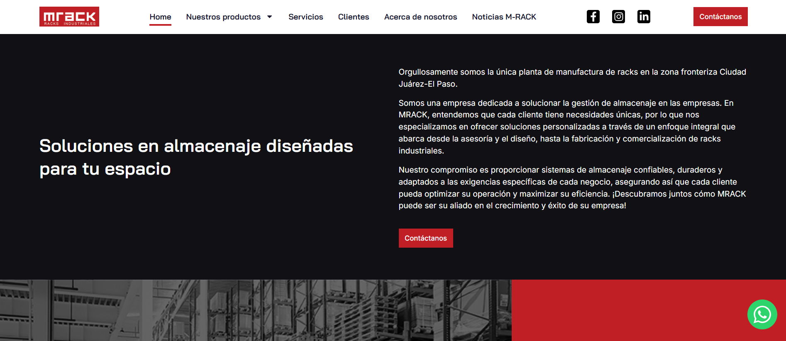
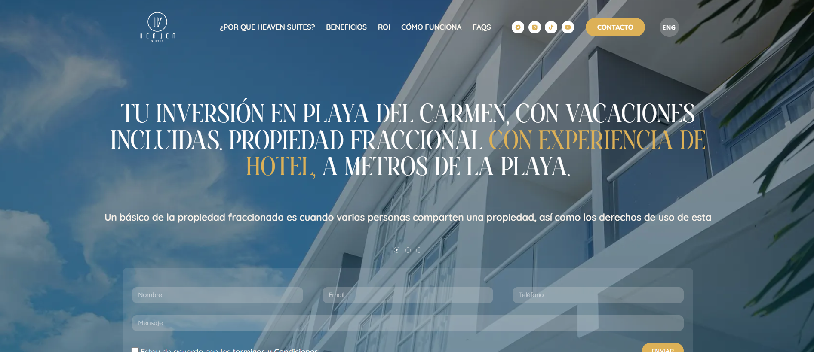

Disponible para nuevos desafíos

Nezahualcóyotl, MX
Hola, soy Angel Luna
<desarrollador_web /> enfocado en crear soluciones eficientes, escalables y con un diseño impecable.
Deslizar
<desarrollador_web /> enfocado en crear soluciones eficientes, escalables y con un diseño impecable.
Soy un desarrollador de software con experiencia en tecnologías modernas como HTML, CSS, JavaScript, PHP y Java. Cuento con más de dos años de experiencia profesional diseñando y optimizando soluciones web funcionales que sigan las mejores prácticas y arquitecturas como MVC.
Egresé como Técnico Superior Universitario en Desarrollo de Software Multiplataforma en la Universidad Tecnológica de Nezahualcóyotl , donde actualmente me encuentro titulado.
A lo largo de mi carrera profesional y remota, he desarrollado más de 10 proyectos integrales para clientes de diversos sectores de Latinoamérica, con tecnologías sólidas como WordPress, React, Laravel y Tailwind CSS.
Solución inteligente de gestión y reserva de estacionamientos enfocada en modularizar pensiones en la CDMX. Desarrollada para la Exposición de Proyectos UTN, enfocando optimización lógica e interfaz de usuario avanzada.
Herramientas y arquitecturas que utilizo activamente para crear interfaces web de gran fluidez y rendimiento.
Creación de interfaces estructuradas, lógicas y totalmente interactivas.
Modelado de bases de datos, lógica server-side y flujos dinámicos.
Prácticas orientadas a la entrega ágil de valor real.

Sitio corporativo optimizado estructuralmente para captación calificada de prospectos y alta velocidad de despliegue.

Sitio enfocado en servicios de tecnología e infraestructura con un diseño moderno, intuitivo y adaptado para móviles.

Diseño de interfaz dinámico y veloz orientado a captación del sector entretenimiento y farmacéutico.

Arquitectura robusta de portal corporativo de entretenimiento y consultoría comercial de alto impacto.

Sitio comercial enfocado en optimizar conversiones dentro del sector premium de zonas hoteleras y turísticas.

Portal enfocado en captación corporativa, optimización SEO y distribución ágil de información técnica.